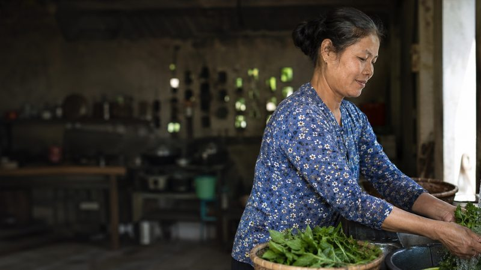
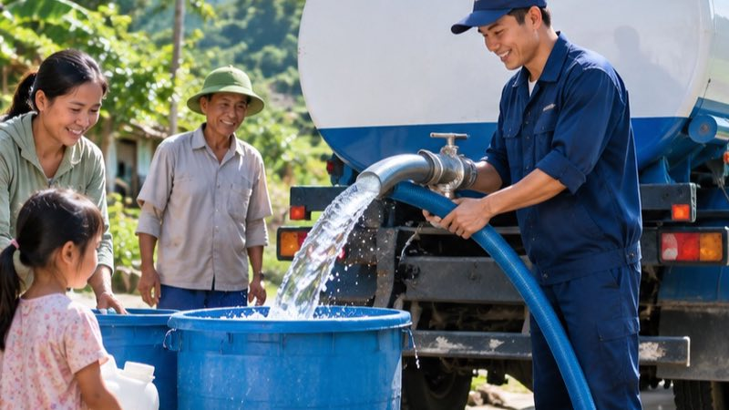
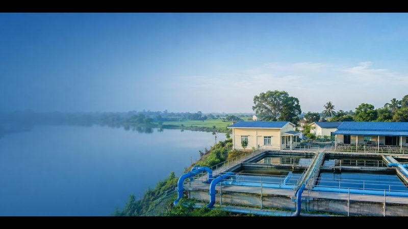
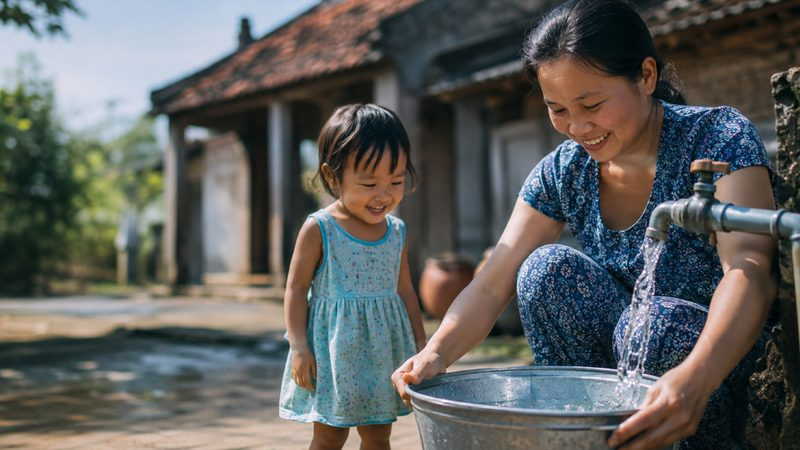
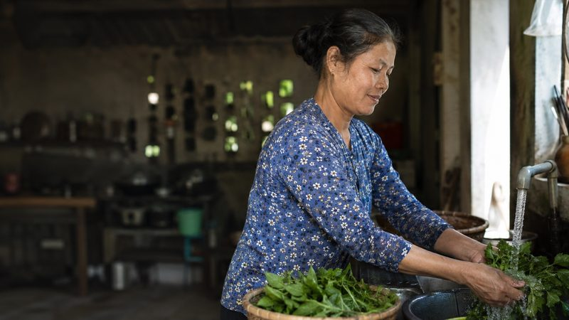

Thông báo tạm ngừng cấp nước xã Mỹ Hà
Tạm ngừng cấp nước tại xã Mỹ Hà để phục vụ công tác đấu nối tuyến ống mới.
Tạm ngừng cấp nước tại xã Mỹ Hà để phục vụ công tác đấu nối tuyến ống mới.
Nước có thể đục nhẹ trong thời gian súc xả tuyến ống tại khu vực Giao Thiện.

Lịch ghi chỉ số đồng hồ nước tại Nam Vân được điều chỉnh sang tuần kế tiếp.
Công bố kết quả kiểm nghiệm các chỉ tiêu chất lượng nước tại khu vực Nam Phong.
Tạm ngừng cấp nước tại xã Xuân Trường để phục vụ công tác đấu nối tuyến ống mới.

Nước có thể đục nhẹ trong thời gian súc xả tuyến ống tại khu vực Hải Hậu.
Lịch ghi chỉ số đồng hồ nước tại Nghĩa Hưng được điều chỉnh sang tuần kế tiếp.
Công bố kết quả kiểm nghiệm các chỉ tiêu chất lượng nước tại khu vực Trực Ninh.
Tạm ngừng cấp nước tại xã Ý Yên để phục vụ công tác đấu nối tuyến ống mới.
Nước có thể đục nhẹ trong thời gian súc xả tuyến ống tại khu vực Vụ Bản.
Lịch ghi chỉ số đồng hồ nước tại Mỹ Lộc được điều chỉnh sang tuần kế tiếp.
Công bố kết quả kiểm nghiệm các chỉ tiêu chất lượng nước tại khu vực Mỹ Tân.
Tạm ngừng cấp nước tại xã Mỹ Thắng để phục vụ công tác đấu nối tuyến ống mới.
Nước có thể đục nhẹ trong thời gian súc xả tuyến ống tại khu vực Nam Hồng.
Lịch ghi chỉ số đồng hồ nước tại Nam Điền được điều chỉnh sang tuần kế tiếp.
Công bố kết quả kiểm nghiệm các chỉ tiêu chất lượng nước tại khu vực Giao Yến.
Tạm ngừng cấp nước tại xã Giao Long để phục vụ công tác đấu nối tuyến ống mới.
Nước có thể đục nhẹ trong thời gian súc xả tuyến ống tại khu vực Xuân Ninh.
Lịch ghi chỉ số đồng hồ nước tại Xuân Hòa được điều chỉnh sang tuần kế tiếp.
Công bố kết quả kiểm nghiệm các chỉ tiêu chất lượng nước tại khu vực Trực Đại.
Tuyến ống mới được đưa vào vận hành, nâng tỷ lệ hộ dân dùng nước sạch tại xã Mỹ Hà.
Trạm cấp nước khu vực Giao Thiện được nâng công suất để đáp ứng nhu cầu dùng nước tăng.
Công tác bảo dưỡng định kỳ giúp duy trì ổn định nguồn cấp nước tại Nam Vân.

Công trình cấp nước sạch xã Nam Phong chính thức đưa vào sử dụng.

Tuyến ống mới được đưa vào vận hành, nâng tỷ lệ hộ dân dùng nước sạch tại xã Xuân Trường.
Trạm cấp nước khu vực Hải Hậu được nâng công suất để đáp ứng nhu cầu dùng nước tăng.
Công tác bảo dưỡng định kỳ giúp duy trì ổn định nguồn cấp nước tại Nghĩa Hưng.
Công trình cấp nước sạch xã Trực Ninh chính thức đưa vào sử dụng.
Tuyến ống mới được đưa vào vận hành, nâng tỷ lệ hộ dân dùng nước sạch tại xã Ý Yên.
Trạm cấp nước khu vực Vụ Bản được nâng công suất để đáp ứng nhu cầu dùng nước tăng.
Công tác bảo dưỡng định kỳ giúp duy trì ổn định nguồn cấp nước tại Mỹ Lộc.
Công trình cấp nước sạch xã Mỹ Tân chính thức đưa vào sử dụng.
Tuyến ống mới được đưa vào vận hành, nâng tỷ lệ hộ dân dùng nước sạch tại xã Mỹ Thắng.
Trạm cấp nước khu vực Nam Hồng được nâng công suất để đáp ứng nhu cầu dùng nước tăng.
Công tác bảo dưỡng định kỳ giúp duy trì ổn định nguồn cấp nước tại Nam Điền.
Công trình cấp nước sạch xã Giao Yến chính thức đưa vào sử dụng.
Tuyến ống mới được đưa vào vận hành, nâng tỷ lệ hộ dân dùng nước sạch tại xã Giao Long.
Trạm cấp nước khu vực Xuân Ninh được nâng công suất để đáp ứng nhu cầu dùng nước tăng.
Công tác bảo dưỡng định kỳ giúp duy trì ổn định nguồn cấp nước tại Xuân Hòa.
Công trình cấp nước sạch xã Trực Đại chính thức đưa vào sử dụng.
Chương trình hỗ trợ nước sạch học đường được triển khai tại xã Mỹ Hà.
Hoạt động trồng cây góp phần bảo vệ nguồn nước đầu nguồn khu vực Giao Thiện.
Buổi truyền thông giúp người dân Nam Vân hiểu thêm cách dùng nước tiết kiệm.
Hoạt động hướng dẫn học sinh trường Nam Phong rửa tay bằng nước sạch đúng cách.
Chương trình hỗ trợ nước sạch học đường được triển khai tại xã Xuân Trường.
Hoạt động trồng cây góp phần bảo vệ nguồn nước đầu nguồn khu vực Hải Hậu.
Buổi truyền thông giúp người dân Nghĩa Hưng hiểu thêm cách dùng nước tiết kiệm.
Hoạt động hướng dẫn học sinh trường Trực Ninh rửa tay bằng nước sạch đúng cách.
Chương trình hỗ trợ nước sạch học đường được triển khai tại xã Ý Yên.
Hoạt động trồng cây góp phần bảo vệ nguồn nước đầu nguồn khu vực Vụ Bản.
Buổi truyền thông giúp người dân Mỹ Lộc hiểu thêm cách dùng nước tiết kiệm.
Hoạt động hướng dẫn học sinh trường Mỹ Tân rửa tay bằng nước sạch đúng cách.
Chương trình hỗ trợ nước sạch học đường được triển khai tại xã Mỹ Thắng.
Hoạt động trồng cây góp phần bảo vệ nguồn nước đầu nguồn khu vực Nam Hồng.
Buổi truyền thông giúp người dân Nam Điền hiểu thêm cách dùng nước tiết kiệm.
Hoạt động hướng dẫn học sinh trường Giao Yến rửa tay bằng nước sạch đúng cách.
Chương trình hỗ trợ nước sạch học đường được triển khai tại xã Giao Long.
Hoạt động trồng cây góp phần bảo vệ nguồn nước đầu nguồn khu vực Xuân Ninh.
Buổi truyền thông giúp người dân Xuân Hòa hiểu thêm cách dùng nước tiết kiệm.
Hoạt động hướng dẫn học sinh trường Trực Đại rửa tay bằng nước sạch đúng cách.
Cách khoá van và đọc đồng hồ để phát hiện rò rỉ trong nhà trước khi gọi tổng đài.
Vài thói quen đơn giản giúp hộ gia đình giảm lượng nước tiêu thụ.
Giải thích ngắn gọn về clo dư trong nước máy và khi nào cần lo ngại.
Hướng dẫn đọc đúng dãy số đen và số đỏ trên mặt đồng hồ nước.

Cách khoá van và đọc đồng hồ để phát hiện rò rỉ trong nhà trước khi gọi tổng đài.
Vài thói quen đơn giản giúp hộ gia đình giảm lượng nước tiêu thụ.
Giải thích ngắn gọn về clo dư trong nước máy và khi nào cần lo ngại.
Hướng dẫn đọc đúng dãy số đen và số đỏ trên mặt đồng hồ nước.
Cách khoá van và đọc đồng hồ để phát hiện rò rỉ trong nhà trước khi gọi tổng đài.
Vài thói quen đơn giản giúp hộ gia đình giảm lượng nước tiêu thụ.
Giải thích ngắn gọn về clo dư trong nước máy và khi nào cần lo ngại.
Hướng dẫn đọc đúng dãy số đen và số đỏ trên mặt đồng hồ nước.
Cách khoá van và đọc đồng hồ để phát hiện rò rỉ trong nhà trước khi gọi tổng đài.
Vài thói quen đơn giản giúp hộ gia đình giảm lượng nước tiêu thụ.
Giải thích ngắn gọn về clo dư trong nước máy và khi nào cần lo ngại.
Hướng dẫn đọc đúng dãy số đen và số đỏ trên mặt đồng hồ nước.
Cách khoá van và đọc đồng hồ để phát hiện rò rỉ trong nhà trước khi gọi tổng đài.
Vài thói quen đơn giản giúp hộ gia đình giảm lượng nước tiêu thụ.
Giải thích ngắn gọn về clo dư trong nước máy và khi nào cần lo ngại.
Hướng dẫn đọc đúng dãy số đen và số đỏ trên mặt đồng hồ nước.